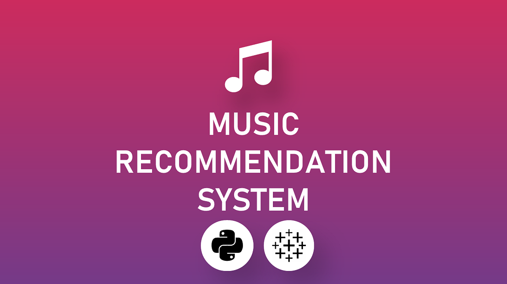

Greetings! I'm Sumedh A. Sonawane, a dedicated Master's student pursuing Applied Data Science at Indiana University in Indianapolis, USA. Complementing my academic journey, I hold a Bachelor's degree in Computer Engineering from Savitribai Phule Pune University. As a current Research Assistant at the Luddy School of Informatics Computing and Engineering, I contribute to the development of an AI chatbot, focusing on natural language understanding and large language models.


•Utilized image processing techniques and a convolutional neural network (CNN) to segment brain MRI data.
•Developed a model achieving 90% accuracy in predicting the presence of brain tumours.
.

• Developed a user-friendly music recommendation app using Python, Streamlit, and Spotify dataset.
• Implemented a recommendation algorithm based on cosine similarity to enhance personalized playlist suggestions.

"Welcome to the Football Data Analysis Project, where we delve into the intricate details of football match data to uncover insights and trends." "Our goal is to provide valuable information to team managers, enthusiastic fans, and fantasy game players, aiding them in making informed decisions and gaining a deeper understanding of team dynamics.
Sql project-English premier league database
English Premier League Database This project is an SQL database for managing data related to the English Premier League (EPL), including information about clubs, players, matches, bookings, goals, injuries, managers, referees, stadiums, standings, transfers, trophies, and more.
This research paper discusses the development of a Smart Farm IoT system for agriculture, focusing on improving crop yield and disease prevention in the context of a growing global population, which is expected to reach 9.7 billion by 2050. The paper utilizes past data mining techniques to evaluate crop production and environmental changes. It employs a Convolutional Neural Network (CNN) framework to predict crop diseases and recommend suitable fertilizers based on climatic conditions (Temperature, Humidity, Rainfall). The system captures images of plant leaves to identify diseases, achieving an accuracy of 92%. Additionally, it provides information on nearby fertilizer shops, facilitating access to necessary resources. This research emphasizes the importance of modern technology, data analysis, and IoT in agriculture to meet the world's increasing food demand while enabling more informed decisions for farmers.
The paper "Improved Genetic Optimized Feature Selection for Online Sequential Extreme Learning Machine" introduces IG-OSELM, a novel approach to enhance the Online Sequential Extreme Learning Machine's (OS-ELM) performance with sequential clinical datasets. IG-OSELM employs genetic algorithms for efficient feature selection, addressing redundant and irrelevant features associated with Extreme Learning Machine (ELM) in sequential data. Using diverse clinical datasets like Pima Indian Diabetes and Statlog heart disease, experiments compare ELM, IG-ELM, OS-ELM, and IG-OSELM. Results reveal IG-ELM's significant improvement in classification accuracy and feature reduction, highlighting the efficacy of IG-OSELM. The study emphasizes the crucial role of optimal feature selection in boosting machine learning models' generalization performance, particularly for real-time applications with sequential input data.